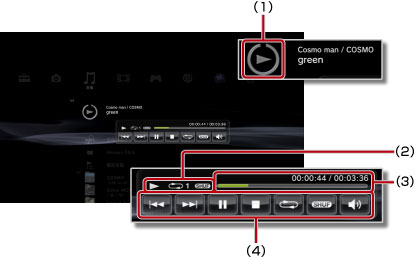

音樂 > 使用迷你操作介面
使用迷你操作介面
播放音樂時，可使用迷你操作介面執行基本操作。
1. |
播放音樂時按下PS按鈕。 |
||||||||
|---|---|---|---|---|---|---|---|---|---|
2. |
使用方向按鈕，選擇 
|
提示
- 播放中的圖示會顯示於
 （音樂）的最上方。
（音樂）的最上方。 - 顯示迷你操作介面時按下
 按鈕，即會繼續播放音樂且關閉迷你操作介面。
按鈕，即會繼續播放音樂且關閉迷你操作介面。
上一首

回到播放中曲目或上一首曲目的起始處。
下一首
移動至下一首曲目的起始處。
暫停
暫時停止播放。
停止
停止播放並關閉迷你操作介面。
隨機
隨機播放樂曲。
重複
進行重複播放。反覆按下 按鈕，可依序更換為以下3種模式。
按鈕，可依序更換為以下3種模式。
 |
重複播放單首樂曲。 |
|---|---|
|
重複播放所有樂曲。 |
| 不顯示 | 解除重複播放，依曲目順序播放。 |
調整音量
設定選擇（音樂）播放內容時的輸出音量。可分9階段調整。
提示
輸出音量若調整過高，可能會出現雜音或不協調音。此時請降低輸出音量。